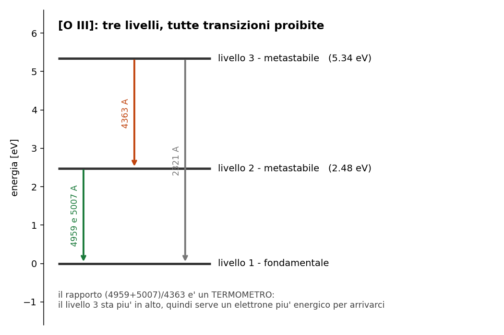
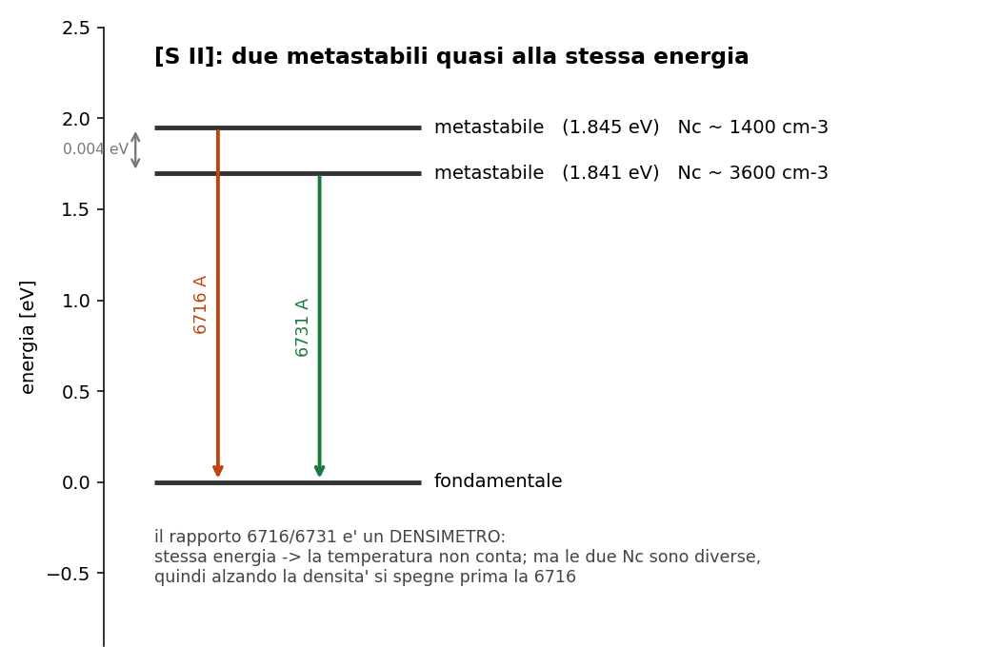

5.7 - Righe proibite: perche' esistono e come si usano
Dispensa: cap. 5.7 (pag. 69-78).
Prima meta' in PODS (il mistero storico del nebulio, vedi il
Di cosa parla tutto il corso), seconda meta' a mattoncini sui due diagnostici.
Nelle nebulose si osservano righe intensissime che in laboratorio non si erano mai viste. Per un po'
si e' pensato che venissero da un elemento sconosciuto, e gli era stato dato pure un nome
("nebulio"). Poi si e' capito che erano righe di elementi normalissimi, che pero' sulla Terra
non si riescono a produrre.
Questo capitolo spiega perche', e poi mostra la cosa piu' utile del corso: come usarle per
misurare temperatura e densita' di un gas lontano anni luce.
1. Cosa vuol dire "proibita"
Una transizione e' proibita quando viola le regole di selezione del dipolo elettrico, che sono
il meccanismo con cui avvengono le transizioni normali.
Ma proibita non vuol dire impossibile: l' atomo puo' comunque scendere per altre vie, il
quadrupolo elettrico o il dipolo magnetico. Sono canali molto meno efficienti, ma esistono.
Il risultato e' un $A_{21}$ ridicolmente piccolo:
| tipo di transizione | $A_{21}$ |
|---|---|
| permessa (dipolo elettrico) | $\sim 10^8$ s$^{-1}$ |
| proibita | $\sim 10^{-2}$ s$^{-1}$ |
Dieci ordini di grandezza.
Questa e' la parte che conta: il nome "proibita" e' fuorviante e conviene tradurselo. Sono righe
improbabili, o pigre: l' atomo ci mette secondi o minuti a fare quello che di solito fa in
$10^{-8}$ secondi. Non e' che non lo fa: e' che se la prende comoda.
Notazione: le righe proibite si scrivono fra parentesi quadre, tipo [O III].
2. Il livello metastabile
Un livello si dice metastabile quando l' unica via d' uscita e' una transizione proibita.
L' elettrone che ci finisce sopra ci resta parcheggiato secondi o minuti, invece dei
$10^{-8}$ secondi di un livello normale.
2.1 Perché stanno sempre a pochi eV
Questa e' una domanda che uno dovrebbe farsi, perche' non e' una coincidenza.
I livelli metastabili stanno tipicamente pochi eV sopra il fondamentale, e il motivo e' che
nascono dalla stessa configurazione elettronica del fondamentale: gli elettroni sono negli
stessi orbitali, solo con spin o momenti angolari organizzati diversamente.
Da qui seguono due cose insieme:
- costa poco arrivarci, perche' riorganizzare gli spin senza cambiare orbitale non richiede
molta energia -> pochi eV - e' proibito tornare giu', perche' una transizione di dipolo elettrico dentro la stessa
configurazione non e' permessa
Nota subito così de botto: le due cose hanno la stessa causa. Sono a bassa energia perche'
condividono la configurazione col fondamentale, e sono proibite per lo stesso motivo. Non sono
due proprieta' separate che capitano insieme.
E la prima e' proprio quello che serve: pochi eV vuol dire raggiungibili per urto a $10^4$ K,
dove gli elettroni hanno 0.86 eV. Il fondamentale dell' idrogeno, che sta a 10.2 eV dal primo
livello eccitato, non lo raggiunge nessuno.
3. Perché si vedono solo nelle nebulose
Adesso si mette insieme tutto quello che si e' costruito nel
capitolo 5.
La densita' critica e':
$$N_c = \frac{A_{21}}{Q_{21}}$$
Se $A_{21}$ e' minuscolo, allora $N_c$ e' bassissima. Per le righe proibite $N_c$ sta intorno
a $10^2 - 10^6$ cm$^{-3}$, che e' un vuoto spinto per gli standard terrestri.
| ambiente | $N_e$ | cosa succede |
|---|---|---|
| laboratorio, anche in vuoto | $\gg N_c$ | quenching: l' urto arriva prima dell' emissione |
| fotosfera stellare ($10^{14}$) | $\ggg N_c$ | quenching totale |
| nebulosa ($10^2 - 10^4$) | $\ll N_c$ | l' atomo fa in tempo a emettere |
In una nebulosa l' atomo eccitato puo' starsene tranquillo per minuti: tanto non passa nessuno a
disturbarlo.
3.1 La conseguenza da tenere
vedere una riga proibita e' gia' la prova che il gas e' rarefatto.
Non serve nessuna misura ulteriore: la sua sola presenza nello spettro dice che $N_e < N_c$.
3.2 Sono sempre righe di emissione
E lo si puo' argomentare in due modi, che poi sono lo stesso.
Guardando come si popolano: il livello metastabile si popola per urto, non per
assorbimento di fotoni. Un atomo nel fondamentale che vede passare un fotone della giusta energia
non lo assorbe, perche' quella transizione e' proibita in tutte e due i versi.
Guardando il criterio del capitolo 3: nella nebulosa $I_0 \approx 0$ e il
gas emette, quindi $I < S$, quindi emissione.
4. E adesso il bello: si usano per misurare
Il fatto che si vedano solo nelle nebulose sarebbe una curiosita'. Quello che le rende importanti
e' che dallo spettro si tirano fuori temperatura e densita' del gas.
Il trucco e' sempre quello del capitolo 5.5: si fa il rapporto fra due
righe, cosi' la geometria si semplifica e resta solo la fisica.
E la fisica che resta e' diversa a seconda di come sono messi i livelli:
| se i due livelli sono... | il rapporto sente... | esempio |
|---|---|---|
| a energie molto diverse | la temperatura | [O III] |
| a energie quasi uguali | la densita' | [S II] |
Adesso i due casi uno per volta.
5. [O III], il termometro
L' ossigeno ionizzato due volte ha due livelli metastabili, e stanno a energie ben separate:

| livello | energia |
|---|---|
| 1 - fondamentale | 0 |
| 2 - metastabile | 2.48 eV |
| 3 - metastabile | 5.34 eV |
Le transizioni possibili sono quattro (la $2 \to 1$ finisce su due sottolivelli del fondamentale):
| transizione | riga | usata? |
|---|---|---|
| $3 \to 1$ | 2321 A | no, e' nell' UV |
| $3 \to 2$ | 4363 A | si' |
| $2 \to 1$ | 4959 A | si' |
| $2 \to 1$ | 5007 A | si' |
E il rapporto che si usa e':
$$R_{[O \, III]} = \frac{I_{4959} + I_{5007}}{I_{4363}}$$
5.1 Perché è un termometro
Le due righe al numeratore partono dal livello 2 (2.48 eV), quella al denominatore parte dal
livello 3 (5.34 eV).
Per popolare il livello 3 serve un elettrone piu' energetico che per popolare il livello 2. E
quanti elettroni energetici ci sono dipende solo dalla temperatura.
Quindi:
- gas freddo: pochi elettroni arrivano fino al livello 3 -> la 4363 e' debolissima ->
$R$ grande - gas caldo: il livello 3 si popola -> la 4363 cresce -> $R$ piccolo
Nel rapporto la geometria se ne va e resta essenzialmente il fattore di Boltzmann della differenza
di energia:
$$R \sim e^{\Delta\chi / k_B T}$$
Per dare l' idea di quanto sia sbilanciato: eccitare al livello 2 e' circa 200 volte piu'
probabile che eccitare al livello 3.
5.2 Perché è cieco alla densità
Questa e' la parte che rende [O III] uno strumento pulito, e va detta esplicitamente.
Le densita' critiche dei suoi livelli metastabili stanno molto sopra il range nebulare. Quindi
in una nebulosa siamo sempre e comunque nel regime $N_e \ll N_c$ per tutte e tre le righe, e la
densita' non entra nel rapporto.
$R_{[O \, III]}$ misura la temperatura e non si fa disturbare da nient' altro.
6. [S II], il densimetro
Lo zolfo ionizzato una volta ha anche lui due livelli metastabili, ma stanno praticamente alla
stessa energia:

| riga | energia del livello |
|---|---|
| 6716 A | 1.845 eV |
| 6731 A | 1.841 eV |
Quattro millesimi di eV di differenza, contro i 2.9 eV che separavano i due livelli di [O III].
Il rapporto che si usa e':
$$R_{[S \, II]} = \frac{I_{6716}}{I_{6731}}$$
6.1 Perché la temperatura non conta
Il fattore di Boltzmann fra i due livelli e' $e^{-0.004/k_BT}$, e a $10^4$ K vale praticamente 1.
Cioe': un elettrone che ha abbastanza energia per popolare uno dei due, ne ha abbastanza anche per
popolare l' altro. La temperatura non riesce a distinguerli.
6.2 Perché la densità invece conta
Perche' i due livelli hanno $A_{21}$ diversi, e quindi densita' critiche diverse:
| riga | $N_c$ |
|---|---|
| 6716 | ~1400 cm$^{-3}$ |
| 6731 | ~3600 cm$^{-3}$ |
E quei due numeri stanno dentro il range delle densita' nebulari, mentre quelli di [O III]
stanno molto piu' su.
Alzando la densita', la transizione piu' lenta (quella con $N_c$ piu' bassa, la 6716) viene
spenta per prima dagli urti, mentre l' altra regge ancora un po'. Quindi il rapporto cala.
| regime | $R_{[S \, II]}$ |
|---|---|
| $N_e \ll N_c$ (bassa densita') | ~1.4 |
| $N_e \gg N_c$ (alta densita') | ~0.4 |
6.3 Attenzione: funziona solo dentro una finestra
Vale la pena dirlo perche' e' il limite del metodo.
Se la densita' e' troppo bassa, nessuna delle due righe e' disturbata: si comportano uguali e
il rapporto e' piatto a 1.4.
Se la densita' e' troppo alta, tutte e due sono spente allo stesso modo: il rapporto e' piatto
a 0.4.
Il rapporto misura qualcosa solo nella zona in mezzo, dove una e' spenta e l' altra no. Ed e'
esattamente il motivo per cui serve che le $N_c$ cadano dentro il range che si vuole misurare.
In pratica: e' il principio di qualsiasi strumento di misura. Un termometro da
febbre non serve a misurare la temperatura del forno. Uno strumento funziona nel range in cui la
grandezza che misuri fa cambiare davvero quello che leggi.
7. Il quadro dei due diagnostici
| [O III] | [S II] | |
|---|---|---|
| separazione dei livelli | 2.9 eV | 0.004 eV |
| $N_c$ rispetto al range nebulare | molto sopra | dentro |
| il rapporto sente | la temperatura | la densita' |
| righe | (4959+5007)/4363 | 6716/6731 |
| valori | $R$ grande = freddo | 1.4 = rarefatto, 0.4 = denso |
Usati insieme danno temperatura e densita' della stessa nebulosa: [O III] misura $T_e$ senza
sentire la densita', poi con quella $T_e$ nota si legge [S II] per avere $N_e$.
8. In breve
- proibita = viola le regole di selezione del dipolo elettrico, ma avviene lo stesso per
quadrupolo elettrico o dipolo magnetico - proibita non vuol dire impossibile: vuol dire $A_{21} \sim 10^{-2}$ invece di $10^8$
- metastabile = livello da cui si esce solo con una transizione proibita
- stanno a pochi eV perche' hanno la stessa configurazione elettronica del fondamentale, ed e'
la stessa ragione per cui la transizione e' proibita - si popolano per urto, non per assorbimento, e sono sempre righe di emissione
- $N_c = A_{21}/Q_{21}$ e' bassissima: in laboratorio si spengono, in una nebulosa no
- vedere una riga proibita e' gia' la prova che il gas e' rarefatto
- [O III] = termometro: livelli lontani (2.48 e 5.34 eV), $N_c$ fuori range
- [S II] = densimetro: livelli vicini (0.004 eV), $N_c$ dentro range
Domande tattiche
1. "Proibita" non vuol dire impossibile. Allora cosa vuol dire, esattamente, e che numero
cambia? (-> sezione 1)
2. I livelli metastabili stanno sempre a pochi eV sopra il fondamentale. Non e' una
coincidenza: da cosa dipende? E perche' proprio quella stessa cosa li rende proibiti?
(-> sezione 2.1)
3. Vedi una riga proibita nello spettro. Prima ancora di misurare qualsiasi cosa, cosa sai
gia' di quel gas? (-> sezione 3.1)
4. [O III] misura la temperatura e [S II] la densita'. Cos' e' che rende uno un termometro e
l' altro un densimetro? La risposta e' una sola proprieta', detta in due modi. (-> sezioni 5.1 e 6.2)
5. Perche' [O III] non funziona anche come densimetro, visto che ha pure lui delle $N_c$?
(-> sezione 5.2)
6. Misuri $R_{[S\,II]} = 1.4$. Puoi dire quanto vale la densita', o solo qualcosa di piu'
debole? (-> sezione 6.3)
7. Le righe proibite si popolano per urto e non per assorbimento. Prova a spiegare perche'
usando le stesse regole di selezione della sezione 1. (-> sezione 3.2)